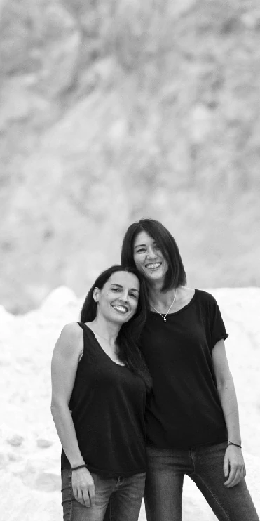
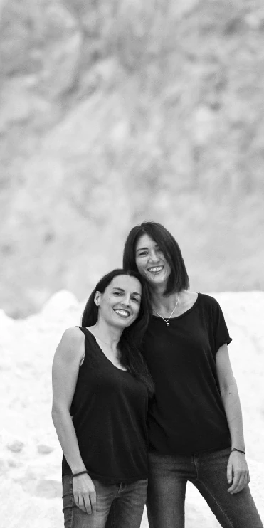

quién es C-art.dance
conoce a nuestro equipo
dirección artística

Carmen G. Jara
composición musical
Realiza sus estudios musicales en el Conservatorio Profesional de Albacete y en el Conservatorio Superior “Oscar Esplá” de Alicante. Posteriormente continua sus estudios de postgrado en L ́Scola de Música de Barcelona, en la Universidad de Barcelona y en la Universidad de Málaga obteniendo su doctorado en 2012.
Completa su formación musical en diversos cursos nacionales e internacionales de perfeccionamiento pianístico, acompañamiento, improvisación y composición con los maestros: Albert Atenelle, Walid Alk, Emilio Molina, Almudena Cano, Aquiles de la Vigne, Leonel Morales, Doru Stephan, José Felipe Díaz, John Salmon, Solomon Mikowksky, etc.
En el curso 2013/2014 se traslada a Amsterdam becada por el Dutch Nationale Opera and Ballet de Amsterdam. Y continúa su especialización con las pianistas Olga Khoziainova, Olga Smirnova y Rex Lobo.
Como pianista ha formado parte de distintas agrupaciones camerísticas, tanto instrumentales como vocales realizando recitales por toda la geografía española y participando en Festivales como Musicosophia (Friburgo), Festival Internacional de Música de Cámara (Valencia), Terral, Festival de Cine de Málaga, etc.
En los últimos años, ligada al mundo de la danza, ha acompañado clases y cursos, del Ballet Nacional de España, Dutch National Ballet, Junior Company of Dutch National Ballet, Academia Nacional Holandesa de Ballet (NBA), Centro Coreográfico de Las Palmas, etc. y a maestros como Ana Baselga, Antonio Ruz, Carolina Márquez, Marnie Thomas, Ernst Meisner, Rinat Gizatulin, Guillaume Graffin, Anatole Yanowsky, etc.
En 2015 crea la formación multidisciplinar AtanosS Project junto al bailarín Ricardo Ocaña (Danza española).
Su faceta como compositora está unida a la danza, al teatro y al género audiovisual. Ha escrito, entre otras, la partitura de las obras de teatro: ¡Ay, Carmela! (E.S.A.D. 2010) y Blanco Weiss (2021); las bandas sonoras de videocreaciones y cortometrajes como: B (Biznaga de Plata, Noche en Blanco del XIII Festival de Cine de Málaga), Contratiempo (Finalista VIII Certamen Cortometrajes Andaluces), De recortes (XIV Premio Ciudad de Antequera), El Billete, (2012), Una mujer feliz, (2019) Premio Mk2 Corto Fest, etc. Compone la música para los espectáculos de danza, Tú y Yo de DA.TE Danza y Desiring Machines del Colectivo La Ballesta.
En 2009 es nominada a los V Jerry Goldsmith Music Awards por la banda sonora original de La vida fluye. Y en 2014 es galardonada con el I Premio de composición Mujer y Cultura de la Diputación de Málaga por la obra Los sueños de orexis o de deseo.
Es pianista acompañante en el Conservatorio Superior de Danza de Málaga y dirige C-Art Dance.

Carolina Márquez
coreografía
Titulada en técnica Graham y Pedagogía en la escuela Martha Graham en Nueva York bajo la dirección de Marnie Thomas y Virginie Mecene. Diploma estudios de Danza Profesionales (Conservatorio Trinity Laban, Londres). Licenciada en Coreografía de la Danza Contemporánea (Conservatorio Superior de Danza, Málaga).
Experiencia como pedagoga en diferentes escuelas de Estados Unidos y España, New York Theatre Ballet, Webster University, Washington University, COCA, San Diego Ballet, Madrid Dance Center, Scaena Carmen Roche, y Conservatorio Superior de Danza de Málaga, entre otros. En el 2023/2024 fue profesora titular de danza contemporánea en el Conservatorio de Danza de Marbella.
En colaboración con el Curro DT organiza cursos y talleres de Graham Technique(™) en Madrid y Málaga con los ex miembros de la compañía de Martha Graham como Marnie Thomas, David Chase, Blakeley White-McGuire y Lloyd Knight. En 2015 obtuvo el derecho temporal de interpretar la obra "Dark Meadow" con la compañía caraBdanza. En 2017 organizó el primer Graham Teacher Workshop en España con Marnie Thomas en el Conservatorio de Danza de Málaga. Ese mismo año, Carolina comienza una colaboración con Techniche di danza moderna bajo la dirección de Caterina Rago. Con C-Art Dance organiza diversas clases magistrales, entre ellas, con Joyce Herring en Centro de Creación Coreográfica de Andalucía en Sevilla y con Ramón Oller en el Conservatorio de Málaga.
A lo largo de su carrera ha formado parte de diferentes trabajos de creación como intérprete y coreógrafa en el Curro DT (Madrid), Laban (Londres), Trolley Dance Festival (California), Trinity College of Music (Londres), Festival de danza “From the ground” (NY), ARCO (Madrid), COCA (St. Louis), Alto Jonio Dance Festival (Italy), Martz Contemporary Dance Company (Madrid), y RDC Youth Company (Birmingham), entre otros.
Fue co-Directora de la compañía caraBdanza y co-fundadora de la escuela caraB Artes Escénicas en Madrid. Algunos de sus trabajos coreográficos son “A solas” , “ Khemia”, “After the rain”, “9D56”, “Hiraeth” e ¨Incisión¨.
Representante en España de la plataforma ¨Graham for Europe¨ que promueve la técnica Graham en Europa y directora de C-Art Dance.
colaboradores

Zaida Ballesteros
Estudia en el Conservatorio Profesional de Danza de Granada. Posteriormente se gradúa en la Universidad de Frankfurt en danza clásica y contemporánea.
Ha trabajado como bailarina con compañías como: Teatro Estatal de Osnabrück, Teatro Estatal de St. Gallen, Opera de Lausanne, Schauspielhaus Stuttgart, Berliner Staatsoper. Y coreógrafas/os como; Sasha Waltz & Guest (Körper, NoBody & Dialogue), Constanza Macras (Big in Bombay), Iztok Kovac, Dieter Heitkamp, Marco Santi , Melissa King, Toula Limnaos, Vera Sanders, Luc Dunberry, Andrea Boll, Yossy Berg y Oded Graf, Linda Kapetanea y Jozef Fruzek, Philipp Egli, Anton Lachky, Aitana C. Vico. Desde 2016 hasta 2020 imparte clases en Mozarteum, Intituto Carl Orrf, Salzburgo desde 2017 hasta el 2022 dirige la sección de danza del Teatro Piccolo (Cottbus).
Finaliza su Máster en Investigación teatral en 2018. En la actualidad trabaja como profesora interina de danza en el Conservatorio Superior de Danza de Málaga, coreógrafa y bailarina independiente; y escribe su Tesis Doctoral.

Carlos Novella
Graduado en Danza Clásica por el Conservatorio Profesional de Sevilla, continúa su formación en el Centro Andaluz de Danza como alumno becado en la especialidad de Neoclásico.
Ha bailado para Compañías como C-ART Dance ("Hiraeth", Producción de Factoría Echegaray), DA.TE Danza ("Nudos") o Cía. Danza Fernando Hurtado ("El paraíso de los necios", "De flor en flor"). En Febrero de 2024 estrena su primera pieza larga en solitario "Maricón", obra premiada por MálagaCrea.
Actualmente continúa su formación en el Conservatorio Superior de Málaga en la modalidad de Coreografía de Danza Contemporánea.

Inma Montalvo
Master en Producción y Gestión Cultural en la Universidad Oberta de Cataluña. Titulada con doble especialidad como Pedagoga y Coreógrafa en Danza Contemporánea en el Conservatorio Superior de Danza de Málaga. Postgrado en Danza Contemporánea en el Centro Andaluz de Danza de Sevilla.
Desde 2008 forma parte de la Compañía de Danza Fernando Hurtado como bailarina en todos sus espectáculos y como codirectora en diferentes proyectos tanto nacionales como internacionales. A nivel internacional ha realizado proyectos para: Ballet Nacional de Perú, la Compañía Nacional de República Dominicana, Compañía Nacional de Bolivia, Compañía Nacional del Salvador.
Es directiva de la formación profesional La Danse Professional en Málaga.

Sandra Abril
Titulada en danza clásica por el Conservatorio Profesional de Danza Reina Sofía de Granada. Grado Superior en Coreografía de Danza Contemporánea en el Conservatorio Superior de Danza de Málaga. Máster en Danza por la Universidad Internacional de La Rioja (UNIR).
Ha trabajado con la Compañía Rafael Amargo en Dionisio, Yerma y The Beautiful Dream of Life. Bailarina de la Compañía Fernando Hurtado en Alice y Aires Revueltos. Se une a la Compañía Merlín, participando en eventos internacionales como el cierre del Ocean Club Marbella y el Festival de Teatro de Riad.
Explora su faceta creativa a través de la creación de Be Reborn y Mónada. Experiencia como docente en instituciones como el Conservatorio Privado Solange Jassens de Almuñécar, la Escuela Headway Dance Studio y la Escuela Happy Style.

Carlos L. Camps
Máster en Estudios Avanzados de Teatro (UNIR), Grado de EE.AA.SS. en Coreografía de Danza Contemporánea (CSD Ángel Pericet), Danza Contemporánea en Centro Andaluz de Danza de Sevilla. Además cuenta con formación en iluminación de espectáculos en vivo y construcción de escenografía/maquinaria escénica por Escénica Técnicos (Sevilla).
Como intérprete/bailarín ha trabajado con diferentes compañías como Cía. Marina Miguélez/Dance Craft, Silencio Danza, Cía. Fernando Hurtado, Cía. Ana Rando, La Pública/Paco Nevado y Producciones Imperdibles, pasando por festivales el TAC de Valladolid, MUT de Castellón, Feria de Teatro de Palma del Ría, Festival de Música y Danza de Granada, Marbella en Danza, Festival Anfitrión entre otros. Además como bailarín ha participado en producciones operísticas del Teatro Cervantes y Teatro de la Maestranza.
En coreografía ha desarrollado varias piezas de formato corto como “Portraits”(dúo) y Sjnor (dúo) junto a Haku Guerrero, “Desaparecer y Ser Cuerpo” (solo), Sísifo (video danza). En la dirección de escena y ayudantía de movimiento ha trabajado con Carolina Márquez en Hiraeth, con Salud Pérez en Palestra, con Jana Pacheco en Ramificaciones Felinas y con Mª José Villar en Ergot.
Combina el trabajo escénico con clases de danza y talleres coreográficos colaborando con diferentes escuelas como Love2Dance (Sevilla), Escuela de Danza CM (Málaga), Marbella Dance School MDS (Marbella) o Semana de la Danza de Bollullos del Cdo. (Huelva).

Marina Miguélez Lucena
Titulada en danza clásica por el Real Conservatorio Profesional de Danza Mariemma en Madrid. Grado Superior en Coreografía de Danza Contemporánea en el Conservatorio Superior de Danza de Málaga.
Trabajó como bailarina independiente en (Interdans, Bélgica), como coreógrafa (Festival Cultural Bad Homburg Frankfurt, Internationales Solo Tanz Theater Festival - Stuttgart), e impartiendo cursos de danza clásica y contemporánea en conservatorios y importantes escuelas de danza de España y de Europa. De 2008 hasta 2015 formó parte del Ballet Estatal de Núremberg, donde trabajó bajo la dirección artística de Goyo Montero e interpretó sobre todo papeles principales tales como “Clara” en El Cascanueces, “Julieta” en Romeo y Julieta, o “Margarita” en Fausto, entre otros.
En noviembre de 2014 recibió el Premio Cultural de Baviera, otorgado por el ministerio alemán, como reconocimiento a su trayectoria profesional.
También tuvo la oportunidad de bailar piezas de otros coreógrafos como Jiři Killian, Ohad Naharin, Johan Inger, Mats Ek, Nacho Duato o Crystal Pite. Continúa como solista en el Bayerischer Künsförderpreis en 2014 y se incorpora al Ballet Estatal de Saarland en septiembre de 2015, donde también interpretó roles principales bajo la dirección de Stijn Celis.
Actualmente dirige su compañía "Dance Craft" y forma parte del equipo de profesores de ESAEM en Málaga.
dirección técnica